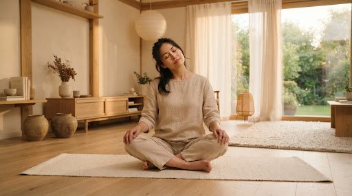
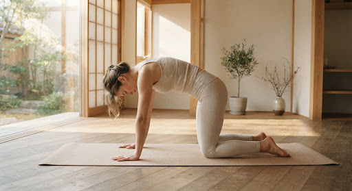
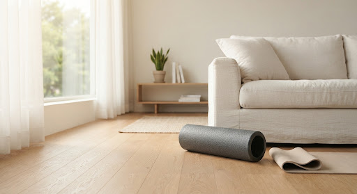
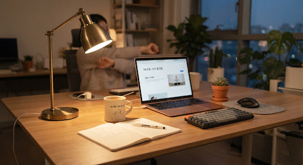

거북목·어깨 결림 주제 4개 · 모두 집에서 매트나 의자로 할 수 있어요

지금 추천 · 거북목·어깨 결림 · 20분 이하
하루 종일 앉아 굳은 목 앞쪽과 어깨를 풀어 줘요. 매트 하나면 되고, 음성 안내를 켜고 끌 수 있어요.

코어·자세 루틴 · 25분
구부정한 등을 세우는 힘을 기르고, 숨을 쉬며 코어를 버텨요
매트 · 자세

폼롤러 등 풀기 · 15분
날개뼈 사이 뭉침을 풀어요 · 토요일 8분에서 멈춤
폼롤러 · 등·어깨

책상 앞 스트레칭 · 10분
야근 중에도 옷 갈아입을 필요 없이 의자에 앉은 채로 해요
도구 없이 · 손목·승모근
걸리는 시간
부위
형식
이어서 하기
폼롤러 등 풀기 · 7분 남음
토요일에 8분까지 하고 멈췄어요. 멈춘 동작부터 이어져요.